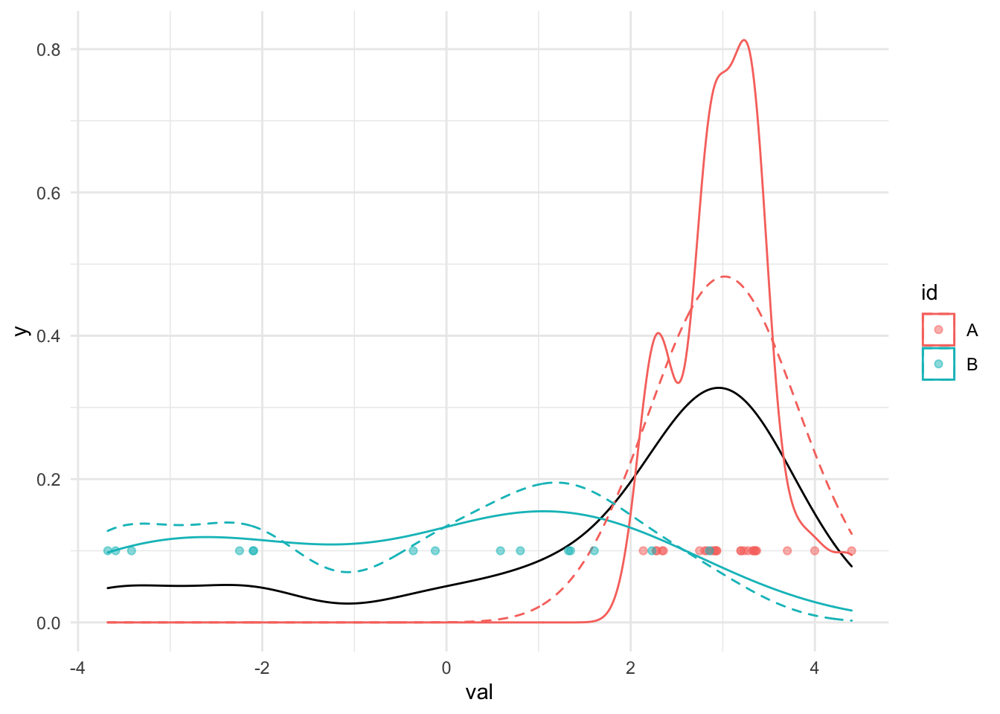
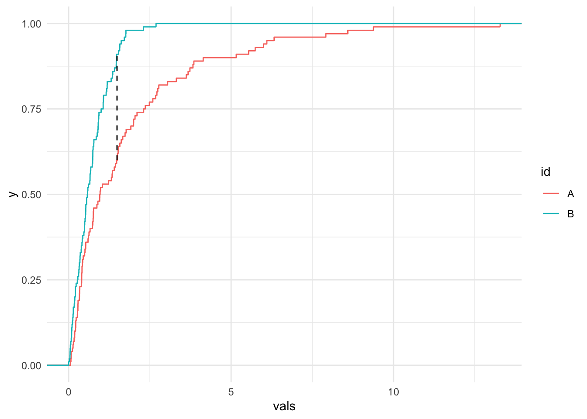

A player gets a “hit” when they successfully hit the ball and get on base. Plot the density of the hits per player per year. Does this data look normal? Why or why not?
ggplot(home_runs, aes(H)) +geom_density() +xlab("Hits per player per year")
Overlapping Example
Which league seems to hit more homeruns? Is there a clear way to tell? More on this later.
home_runs |>ggplot(aes(HR, color = lgID)) +geom_density() +xlab("Home runs per player per year by league")
Homeruns by each team in a given year
Make a violin plot for the year 2019, with a violin for each team. What’s wrong with the plot?
home_runs |>filter(yearID %in%2019) |>ggplot(aes(HR, x =factor(teamID))) +geom_violin(draw_quantiles =c(0.25, 0.5, 0.75)) +geom_jitter(height =0,width =0.1,alpha =0.5 ) +xlab("Home runs per player per team") +scale_x_discrete(guide =guide_axis(n.dodge =2))
Warning in regularize.values(x, y, ties, missing(ties), na.rm = na.rm):
collapsing to unique 'x' values
Improve the plot with a ridge plot. Set the bandwidth to 2.
Use bw.nrd0 to calculate a bandwidth for the example data. Make a single density plot with a density line for:
The entire data
Each id in the example data
Each id in the example data using the calculated bandwidth. (Using a dashed line)
In addition, add a geom_point at each observed value with y=0.1.
What do you notice about the different curves? Which id has a higher standard deviation?
example_data =data.frame(val =c(rnorm(25, mean =3, sd =0.5), rnorm(15, mean =-1, sd =2)), id =c(rep("A", 25), rep("B", 15)))bw =bw.nrd0(example_data$val)ggplot(example_data, aes(val)) +geom_density() +geom_density(aes(color = id)) +geom_density(aes(color = id), linetype ="dashed", bw=bw) +geom_point(aes(x = val, y=0.1, color = id), alpha =0.5)

Bandwidth Selection and Kernels
Repeat the steps above with the same data but use the Sheather jones estimate and a different Kernel. Do either of these changes improve the issue from above?
What is the value of ECDF of the homeruns per player per year at each multiple of 10? Using the value of the ECDF at 70, calculate how many times a player has hit more than 70 homeruns in a year.
Using the given function, plot the KS statistic and ECDFs of two sets of random values (you pick the random values). Carry out the test and interpret.
get_ks_df <-function(dat1, dat2) {# Make ECDF of each set of data ecdf1 <-ecdf(dat1) ecdf2 <-ecdf(dat2)# Calculate the absolute difference between the 2 ECDFs on the support grid_points <-seq(0, max(c(dat1, dat2)), length.out=1000) differences <-abs(ecdf1(grid_points) -ecdf2(grid_points))# Get the KS statistic and where it occurs ks_stat <-max(differences) first_max_location <- grid_points[which.max(differences)]# Return DF to help with plottingdata.frame(x = first_max_location,xend = first_max_location,y =ecdf1(first_max_location),yend =ecdf2(first_max_location) )}num_points =100val_1 =rlnorm(num_points)val_2 =abs(rnorm(num_points))my_data <-data.frame(vals=c(val_1, val_2), id=c(rep("A", num_points), rep("B", num_points)))ggplot(my_data, aes(vals, color = id)) +stat_ecdf(geom ="step") +geom_segment(data =get_ks_df(val_1, val_2),aes(x = x,y = y,xend = xend,yend = yend ),color ="black",linetype ="dashed" )

ks.test(val_1, val_2)
Two-sample Kolmogorov-Smirnov test
data: val_1 and val_2
D = 0.22, p-value = 0.01581
alternative hypothesis: two-sided
Working through the example
Run the code below to do a similar example to the one on the slides:
ks_matrix <-tribble(~year1, ~year2, ~ks_stat, ~p_value)home_runs_to_search <- home_runs |>select(yearID, HR) |>filter(yearID >1994)all_years <-unique(home_runs_to_search$yearID)options(warn =-1) # Turn off ks.test warningfor (year1 in all_years) { year1HR <- home_runs_to_search |>filter(yearID == year1)for (year2 inmin(all_years):year1) { # Only do half since the test is symmetricif (year1 == year2) {next } year2HR = home_runs_to_search |>filter(yearID == year2) test <-ks.test(year1HR$HR, year2HR$HR) ks_matrix <- ks_matrix |>add_row(year1 = year1, year2 = year2, ks_stat = test$statistic, p_value = test$p.value) }}options(warn =0)